Donc il faut démarrer laragon en arrière-plan ⚠️ ×
Documentation du Projet(symfony)
Les principales fonctionnalités(guide visuel)
1. Page d'authentification (index.php)
1.1 Login: Authentification

- Capture login/passwd saisis: $_POST["pseudo_] / $_POST["motdepasse_]
- Comparaison aux valeurs table listeofficiers: $sql= select * from listeofficiers WHERE pseudo=$_POST["pseudo_] AND ...
- Stockage valeur user dans une variable session: $_SESSION["user_role"] = $row["user"];//🎁 pour la gestion des droits

1.2 Gestion des droits(Accès aux fonctionnalités/Accès aux données)
Qui peut accéder à CETTE donnée?
Pour ce faire, symfony utilise 2 technologies:
✔️ Les voters: Décision d'autorisation sur une action
✔️ ACL(Access Control List): Contrôle d'accès aux objets/données
Mais un Voter peut aussi protéger des données. C'est pour ça qu'aujourdhui les "Voters" ont supplanté les ACL.
ROLE_ADMINI, security.yaml et Voters couvrent presque tous les cas métiers.
A) Accès aux fonctionnalités(Supprimer/Rectifier)
Seuls les utilisteurs connectés avec un compte "admin" ont les droits de rectifier un document erroné ou de supprimer un faux document. Dans la pratique, ces privillèges reviennent seulement aux préfets.

B) Accès aux données( en fonction de la préfecture affectée à l'officier)
Qui accède à quoi?
Seul le compte "admin" peut acceder à l'ensemble de l'espace de données.
Un officier d'état civil ne peut travailler que sur les documents relatifs à sa préfecture.

1.3 Gestion des utilisateurs (Ajouter un utilisateur, supprimer un utilisateurs, Afficher tous les utilisateurs)

Ajouter/Suprimer un officier d'état civil
- Ajouter un officier d'état civil
- Allouer un rôle "admin" à un officier d'état civil(On le supprime et on le rajoute en tant qu'admin)
- Retirer le rôle "admin" à un officier d'état civil(On le supprime et on le rajoute sans admin)
- Supprimer un officier d'état civil
- Ni consulter les documents,
- ni manipuler les données.

Afficher tous les officiers d'état civil

On ajoute le traitement dans la même page( php au-dessus de html).
Pas conventionnel mais facil à gerer( la meilleurs c'tjrs la plus simple !)

2. Page d'accueil (accueil.php)
Vue.js (ou React) le ferait beaucoup mieux !
2.1 Ajax: Chargement "table_afficher_naissance.html.twig"

- Choisir la table(Capture de la prefecture cliquée):Quelle table charger
✔️ accueil_choisir_naissance.php → <select onchange="captureCombo(this.value)">
✔️ capture_item.js → function captureCombo(prfctr) → colonne_afficher_naissance.php?p="+prfct - Ouverture du panel:
✔️ accueil_prefecture.php → <td class="listemenu" id="flip"> <div id="panel" class="scrolbar">
✔️ accueil.commandes_panel.js → $("#flip").click(function(){ $("#panel").slideToggle("slow");}); - Chargement de la table:
✔️ capture_item.js → function captureCombo(prfctr) {
✔️ xmlhttp.open("GET","backend/colonne_afficher_naissance.php?p="+prfctr,true )
✔️ document.getElementById("panel").innerHTML = xmlhttp.responseText;
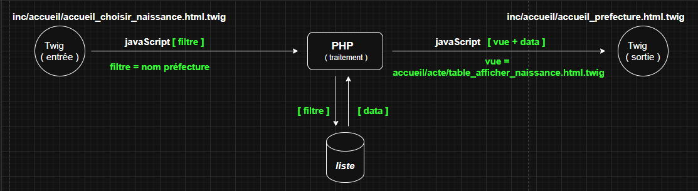
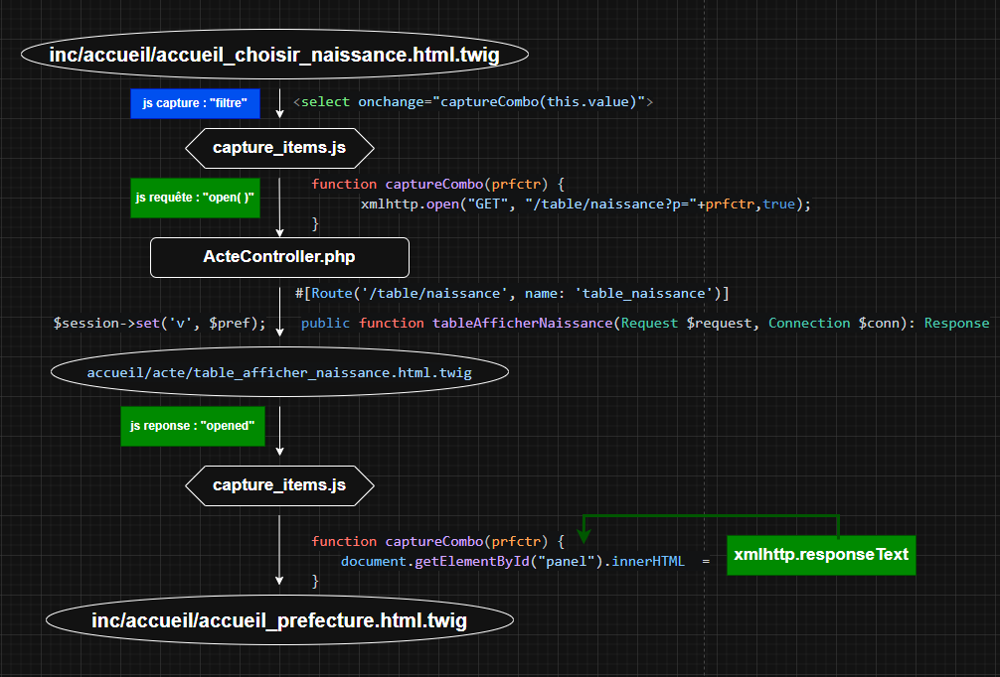
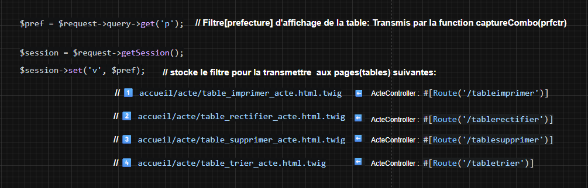
le chargement se fait differement(Solution jQuery uniquement):
-
Chargement des tables: Deux solutions possibles
1️⃣ Solution1(fonction native): load() → accueil.commandes_panel.js
✔️ $(' a#rectif, a#zima , a#print_ , a#trier ').click(function(e){
✔️ $('#panel').load($(this).attr('href'));
✔️ });
- <a id="zima" href="backend/colonne_supprimer_acte.php"> <input type="button" value="Supprimer" />
- <a id="rectif" href="backend/colonne_rectifier_acte.php"> <input type="button" value="Rectifier" />
- <a id="print_" href="backend/colonne_imprimer_acte.php"> input type="button" value="Imprimer" />
- <a id="trier" href="backend/trier.php"> <input type="button" value="Ordre alphabétique"/>
Si au préalable on ne choisi pas la table, on ne peut pas l'ouvrir. Un bug s'impose
C'est pourquoi un alert est posé au dessus de ces 4 boutons.
-
2️⃣ Solution2(fonction maison): captureSousMenu() → capture_items.js
✔️ $("... ul.subMenu li a").click(function() { // inc/lecture/topMenu.php
✔️ captureSousMenu(this.textContent);
✔️ });
2.2 Afficher le document → lien "Afficher"
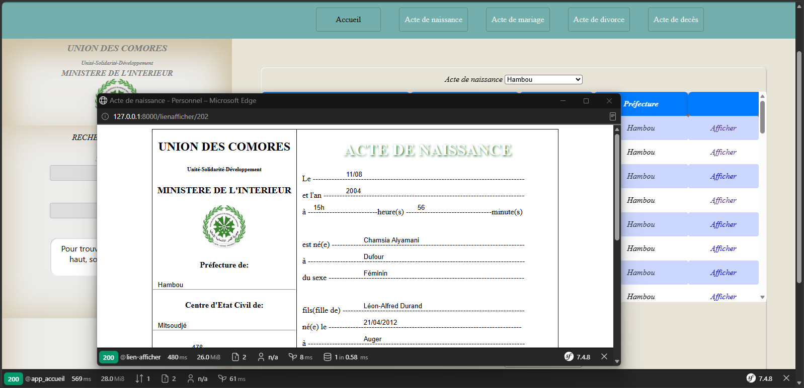
- Aucune variable session utilisée en guise de filte.
- Juste l'id, transmis par URL.
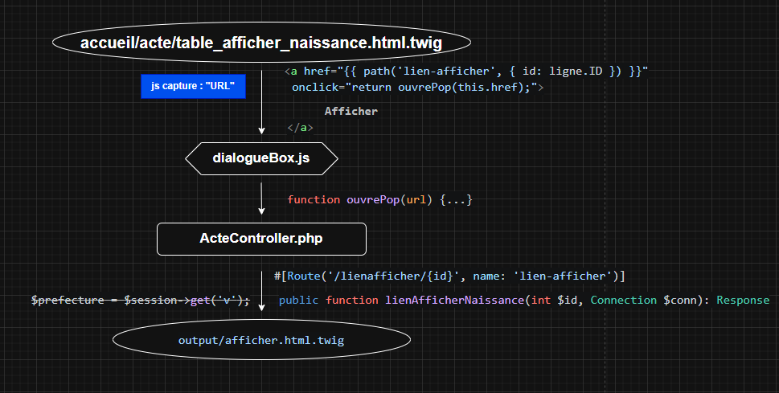
2.3 jQuery: Chargement de la table "Imprimer"

✅ Redirection vers la table "Imprimer"
✅ Chargement(jQuery) de cette table dans div#panel
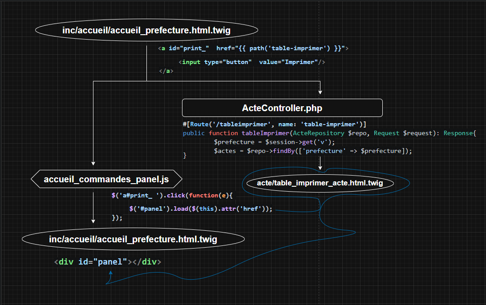
✅ $_SESSION["v"] servira de filtre
✅ Elle contient la prefecture choisie dans inc/accueil/accueil_choisir_naissance.html.twig
✅ Set in: ActeController/#[Route('/table/naissance')] 👉 Voir 2.1 chargement ajax "table_afficher_naissance.html.twig"
2.4 jQuery: Chargement de la table "Rectifier"

Variables: <a id="rectif" href="backend/colonne_rectifier_acte.php">
2.5 jQuery: Chargement de la table "Supprimer"

Variables: <a id="zima" href="backend/colonne_supprimer_acte.php">
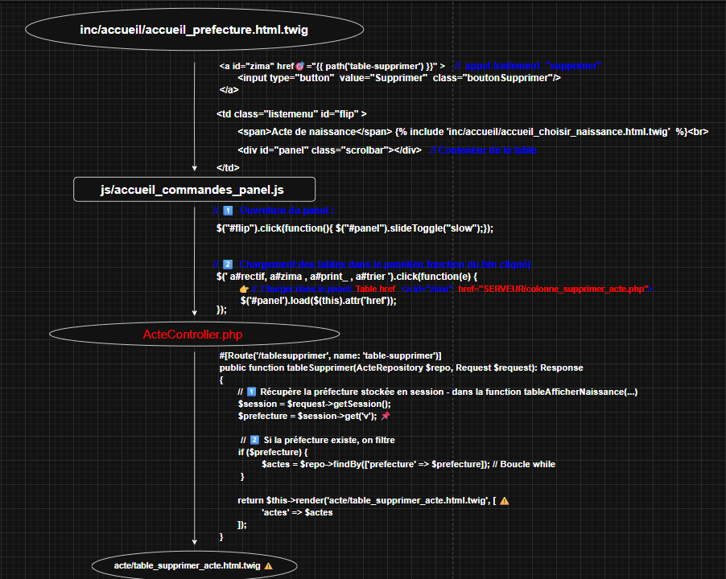
2.6 jQuery: Chargement de la table "Trier"

$R=mysqli_query($conn , "SELECT * FROM liste WHERE prefecture='".$_SESSION["v"]."' ORDER BY nom ")Variables: <a id="trier" href="backend/trier.php">
Alert bug utilisateur: Usage des boutons(Supprimer,Rectifier,Imprimer,Trier)
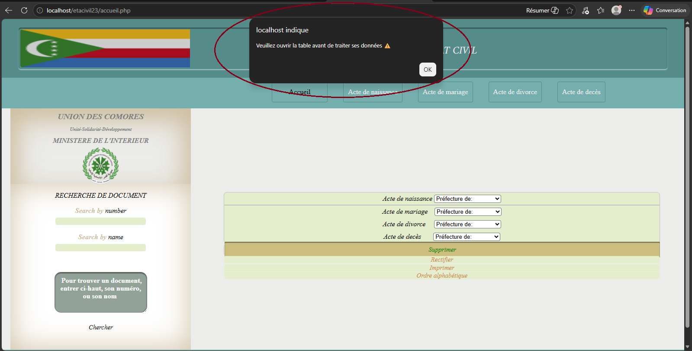
C'est pourquoi l'alert(Veuillez choisir la table avant de traiter ses donnees) est implementé.
- Pas d'accès au bouton "Supprimer"
- Pas d'accès au bouton "Rectifier"
- Pas d'accès au bouton "Imprimer"
- Pas d'accès au bouton "Trier"
À noter que ce problème reste spécifique au procédurale. Il ne se pose pas dans la logique applicative de symfony.
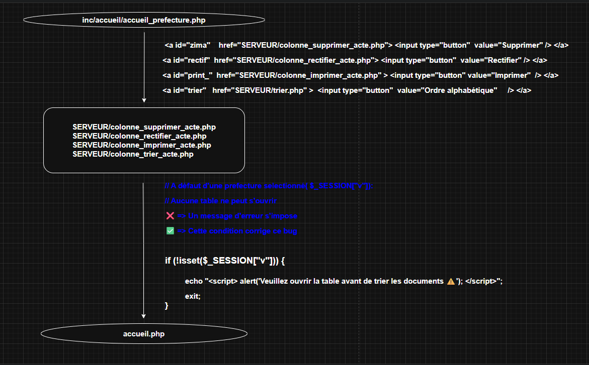
2.7 Fonctionnalité: "Recherche de document"

2.7.1 Recherche par: "Numéro de document"

2.7.2 Recherche par: "nom"

3. Affichage du résultat de la recherche (lectureBD2.php)
3.1 Résultat trouvé de la recherche par numéro

- "accueil.php" ⇒ header("Location:lectureBD2.php?num=".$numero ); 👉 voir 2.7.1
- "lectureBD2.php" ⇒ if(!empty($_GET['num'])) { include("backend/lectureBD2_searchPlayBack.php"); }
- ...
- "backend/lectureBD2_searchPlayBack.php" ⇒ Affichage & Traitements
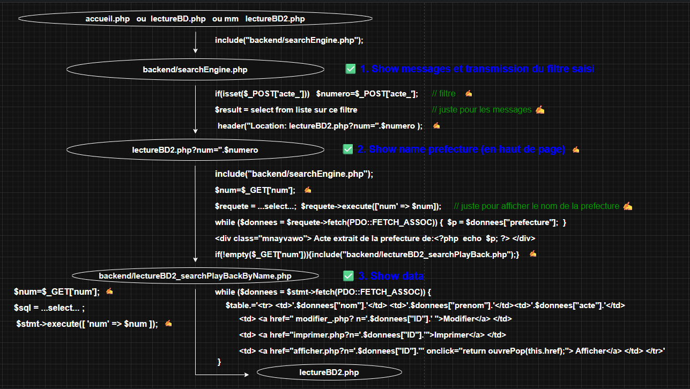
- function ouvrePop(url) ⇒ se trouve dans lecturBD.js
- ✍️ ⇒ Data refactor in search by name
3.2 Résultat trouvé de la recherche par nom

- accueil.php" ⇒ header("Location: lectureBD2.php?nom=".$nomm ); 👉 voir 2.7.2
- "lectureBD2.php" ⇒ if(!empty($_GET['nom'])) { include("backend/lectureBD2_searchPlayBackByName.php"); }
- ...
- "backend/lectureBD2_searchPlayBackByName.php" ⇒ Affichage & Traitements
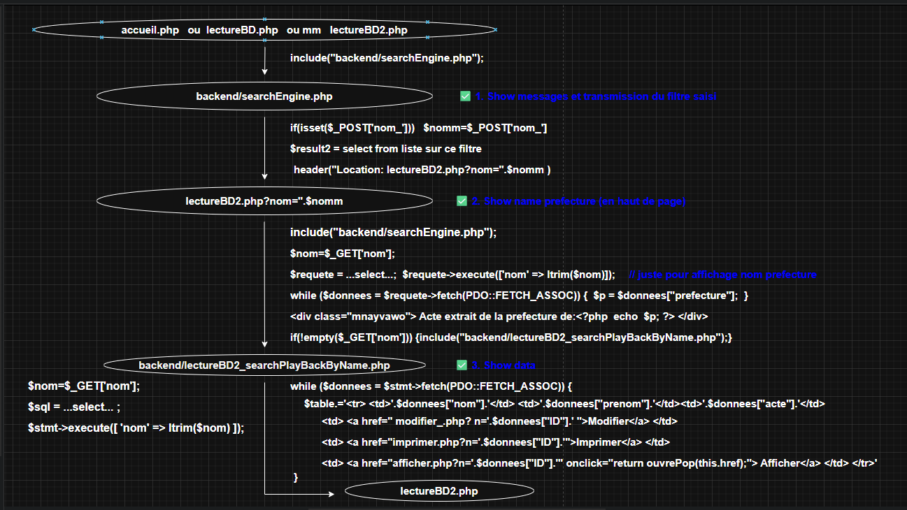
4. Traitement du résultat de recherche: Le document trouvé (lectureBD2.php)
4.1 Afficher: Le document trouvé(suite à la recherche éffectuée en page d'accueil)
- lectureBD2_searchPlayBack.php( si recherche par num).
- lectureBD2_searchPlayBackByName.php( si recherche par nom).
- <a id="lien" href="#" onclick="popup_lectureBD2();"> Afficher </a>
- onclick="popup_lectureBD2(); ⇒ renvoie à lectureBD.js(ligne158)
- lectureBD.js ⇒ function popup_lectureBD2() { wind'ow.open("afficherdanspop.php",'Popup','...ici définition d'un popup d'affichage...' }

4.2 Imprimer: Le document trouvé(suite à la recherche éffectuée en page d'accueil)
- lectureBD2_searchPlayBack.php( si recherche par num).
- lectureBD2_searchPlayBackByName.php( si recherche par nom).
- <a href="imprimer.php?n='.$donnees["ID"].'"> Imprimer </a>
4.3 Modifier: Le document trouvé(suite à la recherche éffectuée en page d'accueil)
- lectureBD2_searchPlayBack.php( si recherche par num).
- lectureBD2_searchPlayBackByName.php( si recherche par nom).
- href="modifier_.php?n='.$donnees["ID"].' & nom_='.$donnees["nom"].' & prenom_='.$donnees["prenom"].' & ... etc
Remarque
Il serait préférable de rassembler les 3 traitements du résultat de recherche(Afficher, Imprimer, modifier) dans un même fichier aulieu de les faire dans deux fichiers séparés(lectureBD2_searchPlayBack.php et lectureBD2_searchPlayBackByName.php)
5. Nouveau document 👉 ecritureBD.php
5.1: Nouvel acte(btn Enregistrer)


5.2: Nouvel acte(btn Afficher)

5.3: Nouvel acte(btn Imprimer)

5.4: Nouvel acte(btn Rectifier)
Seuls les utilisteurs connectés avec un compte "admin" ont les droits de rectifier
un document erroné ou de supprimer un faux document. Dans les pratique, ces privillèges
reviennent seulement aux préfets.👇
Dans le cas de saisie d'un nouveau document, la "rectification" n'est pas restreinte.
Elle est accessible à l'agent administratif ordinaire, qui saisi le nouveau document.
• Si le bouton "Enregistrer" n'est pas encore actionné:
↬ On recharge les données dans tous les champs de saisie ✍️
• Si le bouton "Enregistrer" est actionné:
↬ On redirige vers modifier.php avec transmission du numero de l'acte: modifier_.php?acte_=N° ✍️

6: Rectification de document 👉 modifier_.php
6.1: Rectification (btn Enregistrer)

6.2: Rectification(btn Afficher)

6.3: Rectification(btn Imprimer)

6.4: Rectification(btn Recommencer)
Seuls les utilisteurs connectés avec un compte "admin" ont les droits de rectifier
un document erroné ou de supprimer un faux document. Dans les pratique, ces privillèges
reviennent seulement aux préfets.👇
• Si le bouton "Enregistrer" n'est pas encore actionné:
↬ On recharge les données dans tous les champs de saisie ✍️
• Si le bouton "Enregistrer" est actionné:
↬ On redirige vers modifier.php avec transmission du numero de l'acte: modifier_.php?acte_=N° ✍️
7. Affichage des documents 👉 lectureBD.php
7.1 Ajax - Charger la table "lire/tableNaissance.html.twig"

Asynchronous loading: L'affichage de la table se fait par une combinaison jQuery/Ajax
✔️ jQuery capture la péfecture : inc/lecture/topMenu.php
✔️ Ajax charge la table relative dans div#yivawo : lectureBD.php
Donc le pattern se résume ainsi: jQuery capture l'événement(le menu) et Ajax charge les données. Ils son complémentaires !
C'est exactement la base sur laquelle repose des framworks modernes comme React ou Vue.js
Il serait donc mieux de traduire ce jQuery en version Vue.js


✔️ window.open(...popup..) est remplacé par la fonction ouvrePop(\'afficher.php?n='.$ligne['ID'].'\')
✔️ function ouvrePop(url){...} se trouve dans lectureBD.js
✔️ Symfony éxige ici de préciser les host/port: D'où la définition d'une url dynamique 👉 baseUrl
7.2: Afficher (document)


7.3: Imprimer (document)

C'est le même schémas que "7.2 Afficher(document)". La seule differrence:
👉 Le lien "Afficher" renvoie vers href="afficher.php?n='.$ligne["ID"].'"
👉 Le lien "Imprimer" renvoie vers href="imprimer.php?n='.$ligne["ID"].'"
8. Model de données
✔️ Un entity management : Pour l'accès en écriture(via des méthodes)
✔️ Des repository : Pour l'accès en lecture(via des méthodes)
✔️ Des entités : Pour les accès aux champs(via les getters/setters)
8.1 listeofficiers (table utilisateurs - agents administratifs)

Version copier/coller :
CREATE TABLE `listeofficiers` (
`ID` INT(10) NOT NULL AUTO_INCREMENT,
`pseudo` VARCHAR(30) NOT NULL COLLATE 'utf8mb3_unicode_ci',
`motdepasse` VARCHAR(30) NOT NULL COLLATE 'utf8mb3_unicode_ci',
`user` VARCHAR(30) NULL DEFAULT NULL COLLATE 'utf8mb3_unicode_ci',
PRIMARY KEY (`ID`) USING BTREE
)
COLLATE='utf8mb3_unicode_ci'
ENGINE=MyISAM
AUTO_INCREMENT=10
;
Connection au serveur mysql: mysql -u root 👇


8.2: liste (table stockage des documents)

Version copier/coller :
CREATE TABLE `liste` (
`ID` INT(10) NOT NULL AUTO_INCREMENT,
`prefecture` VARCHAR(30) NOT NULL COLLATE 'utf8mb3_unicode_ci',
`centretatcivil` VARCHAR(30) NOT NULL COLLATE 'utf8mb3_unicode_ci',
`registre` INT(10) NULL DEFAULT NULL,
`acte` INT(10) NOT NULL,
`date_acte` DATE NOT NULL,
`nom` VARCHAR(30) NOT NULL COLLATE 'utf8mb3_unicode_ci',
`prenom` VARCHAR(30) NOT NULL COLLATE 'utf8mb3_unicode_ci',
`delivre_a` VARCHAR(30) NOT NULL COLLATE 'utf8mb3_unicode_ci',
`delivre_le` VARCHAR(30) NOT NULL COLLATE 'utf8mb3_unicode_ci',
`delivre_an` VARCHAR(30) NOT NULL COLLATE 'utf8mb3_unicode_ci',
`num_serie` INT(10) NOT NULL,
`naissance_jour_moi` VARCHAR(30) NOT NULL COLLATE 'utf8mb3_unicode_ci',
`naissance_an` VARCHAR(30) NOT NULL COLLATE 'utf8mb3_unicode_ci',
`naissance_heure` VARCHAR(30) NULL DEFAULT NULL COLLATE 'utf8mb3_unicode_ci',
`naissance_minuite` VARCHAR(30) NULL DEFAULT NULL COLLATE 'utf8mb3_unicode_ci',
`naissance_nom_prenom` VARCHAR(30) NOT NULL COLLATE 'utf8mb3_unicode_ci',
`naissance_lieu` VARCHAR(30) NOT NULL COLLATE 'utf8mb3_unicode_ci',
`naissance_sexe` VARCHAR(30) NOT NULL COLLATE 'utf8mb3_unicode_ci',
`pere_nom_prenom` VARCHAR(30) NOT NULL COLLATE 'utf8mb3_unicode_ci',
`pere_datenaisance` VARCHAR(30) NULL DEFAULT NULL COLLATE 'utf8mb3_unicode_ci',
`pere_lieunaissance` VARCHAR(30) NULL DEFAULT NULL COLLATE 'utf8mb3_unicode_ci',
`pere_profession` VARCHAR(30) NULL DEFAULT NULL COLLATE 'utf8mb3_unicode_ci',
`pere_villederesidence` VARCHAR(30) NULL DEFAULT NULL COLLATE 'utf8mb3_unicode_ci',
`mere_nom_prenom` VARCHAR(30) NOT NULL COLLATE 'utf8mb3_unicode_ci',
`mere_datenaisance` VARCHAR(30) NULL DEFAULT NULL COLLATE 'utf8mb3_unicode_ci',
`mere_lieunaissance` VARCHAR(30) NULL DEFAULT NULL COLLATE 'utf8mb3_unicode_ci',
`mere_profession` VARCHAR(30) NULL DEFAULT NULL COLLATE 'utf8mb3_unicode_ci',
`mere_villederesidenc` VARCHAR(30) NULL DEFAULT NULL COLLATE 'utf8mb3_unicode_ci',
`declaration_faite_par` VARCHAR(60) NOT NULL COLLATE 'utf8mb3_unicode_ci',
`datejugement` VARCHAR(30) NOT NULL COLLATE 'utf8mb3_unicode_ci',
`declaration_recue_pa` VARCHAR(60) NOT NULL COLLATE 'utf8mb3_unicode_ci',
`Edit` VARCHAR(255) NULL DEFAULT NULL COLLATE 'utf8mb3_unicode_ci',
`Imprimer` VARCHAR(255) NULL DEFAULT NULL COLLATE 'utf8mb3_unicode_ci',
`Delete_` VARCHAR(255) NULL DEFAULT NULL COLLATE 'utf8mb3_unicode_ci',
PRIMARY KEY (`ID`) USING BTREE
)
COLLATE='utf8mb3_unicode_ci'
ENGINE=MyISAM
AUTO_INCREMENT=72
;

On peut toujours trouver les tables dans le dossier /sql ⚠️
10. Structure et installation 👉 (framework)
Paradigme: "Adapter symfony à l'existant, plutôt que de tout casser pour rentrer dans un model théorique"10.1: Structure (MVC)
Trois dossier fondamentaux( VC sans M):
🎁 src/Controller.........Pour les fonctions
🎁 templates..............Pour les vues
🎁 public....................Pour les dépendances
Avec ça, on a déjà pu faire tourner un truc(loguer l'user management!)
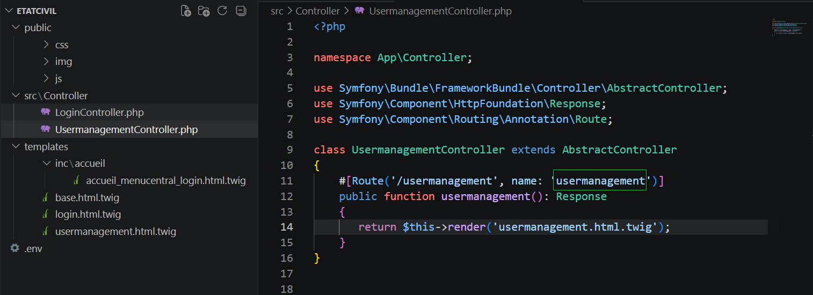
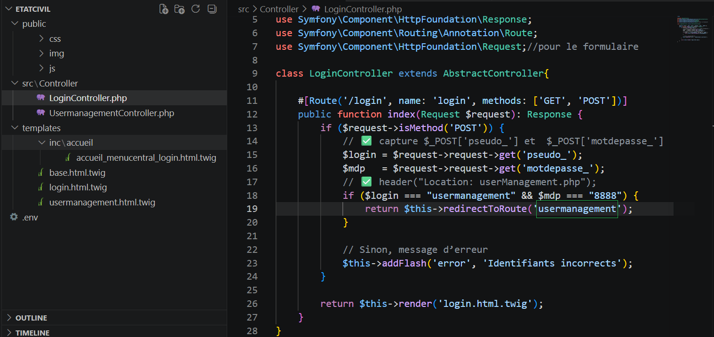
Structure Complète(intégration du Modèle: VC+M ⇒ MVC )

10.2: Installation
# 1. Installation du squelette Symfony
composer create-project symfony/skeleton etatcivil-sf ✅
# 2. Installation du pack WebApp(Twig,Doctrine,Form, Security,HttpClient,WebProfiler,Validator...etc)
cd etatcivil-sf
composer require symfony/webapp-pack ✅
#3. Lancer le serveur Symfony(Première exécution!): On démarre le projet...
cd etatcivil-sf
symfony serve ✅
# Ctrl + le lien affiché(https://127.0.0.1:8000)
TASKS
Task0:
0.1 ecritureBD.php et modifier_.php
👉 Gerer la saisie(interdiction et message) si le numero de document entré existe déjà
INCHA ALLAH
Task1: lectureBD.php (dans Documentation)
1.1 Faire les captures relatifs aux 5 items du menu : "6. Affichage documents"
1.2 Integrer ces images .png et leur ancrage, en attendant les shemas draw.io
1.3 Ajouter classe="scrolbar" dans tous les div#panel des schemas .png (utiliser Paint)
INCHA ALLAH
Task2: accueil.php
2.1 Afficher: Metttre le onclik(qui lance le popup)dans une fonction() ?????????? voir copilote
2.2 Remplacer les liens par des icones:
"Afficher", "Imprimer", "Rectifier","Supprimer".
INCHA ALLAH
Task3: LectureBD.php
3.1 Remplacer les liens "Imprimer" et "Afficher" par des icones
3.2 Afficher: Metttre le onclik(qui lance le popup)dans une fonction() ??????????
INCHA ALLAH
Nombre de fichiers du Projet
C:\laragon\www\etacivil23(b1)
👉 find . -name "*.php" | wc -l
⇒ 133
- 👉 Un fichier include n'a pas besoin de connection( utilise la connection de la page source)
- 👉 Un fichier header location (redirection ) a besoin de nouvelle connection
- 👉 Les solutions les plus simple sont tjrs les meilleurs